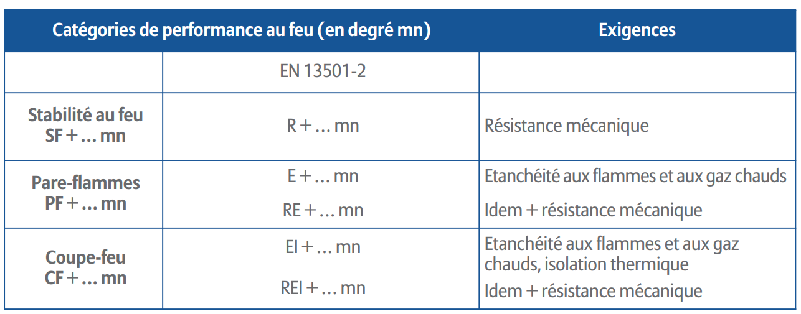
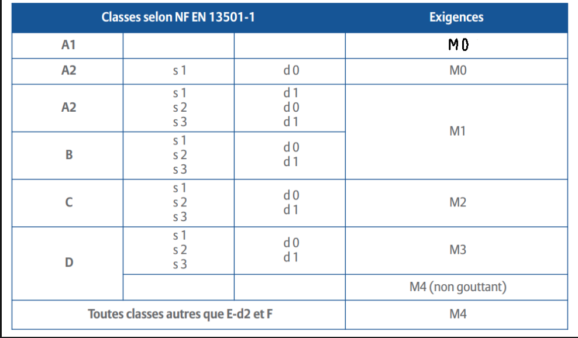

---- LE FEU ----
Définition:
Combustion -> C'est une reaction exotermique, production de chaleur en phase gazeuse entre le combustible et le comburant en présence d'une Energie d'activation.
Feu -> Phénomène maitrisable dans le temps et l'espace.
Incendie -> Phénomène non maitrisable dans le temps et l'espace
Triangle du feu = Combustible (element qui brule), comburant (oxygene), energie d'activation (chaleur, électricité, réaction chimique exotermique)
Différente combustion en fonction de la vitesse de réaction
- ->Lente(oxydation)
- ->Vive(feu)
- ->Trés vive(déflagration)
- ->instantanée(détonation)
- ->spontatnée(détonation)
- ->Complète
- ->Imcomplète
Pouvoir calorifique -> énergie produite par la combustion complete de 1Kg de matériau exprimé en MégaJoule/Kg
Charge calorifique -> énergie produite par la combustion complete de l'ensemble de des matériaux contenus dans un local (Mégajoule)
Potentiel calorifique -> c'est la charge calorifique ramenée à l'unité de surface le M² chagre calorifiques/suface de plancher (Mégajoule/M²)
Point éclair -> température minimal à partir de laquelle, un liquide dégage une quantité suffisante de gaz inflammable pour s'embraser au contact d'une source de chaleur
5 catégories de feu:
- Cat A: Feu de solides
- Cat B: Feu de liquides
- Cat C: Feu de gaz
- Cat D: Feu de métaux
- Cat F: Feu d'huiles/graisse
Les incendies peuvent etre la cause de 3 facteurs, un facteur humain, un facteur technique et un facteur naturelle (electrique reaction biologique ou chimique
Chaque années les incendies tués 800 personnes dont 80% par asphyxie
4 moyens de propagation du feu
- Convection ->Déplacement des gaz chauds et inflammable
- Rayonnement ->transfert chaleur par rayonnement electromagnétique
- Projection -> étincelles
- Conduction -> transfert de chaleur
- Ependage -> propagation par un liquide enflammé
4 dangers des fumées
- Couleur
- Opacité
- Mouvements
- Inflammable
- toXic
---- LE COMPORTEMENTS DU FEU ----
Résistence au feu -> Conditions dans lesquelles les éléments de construction(plancher haut, plancher bas, cloisons, porte etc etc)
continue à jouer leurs rôles malgré l'action d'un incendie
Réaction au feu -> Réaction qu'aura un matériau en tant qu'aliment du feu et au développement de l'incendie. (panneau, revêtements, muraux, etc etc)
Résistence au feu -> Temps pendant lequel l'élément de construction joue le rôle qui lui est dévolu malgré l'action d'un incendie:
- Limiter la Propagation
- Permettre l'évacuation
- Faciliter l'intervention des pompiers
Résistance mécanique / étanchéité aux flammes gaz ou inflammables| non émision de gaz / Isolation thermiques == REI 30minute(norme européenne)
3 catégories de performances

Stabilité au feu = SF(norme FR) -> R (norme EU)
Pare-flamme = PF(norme FR) -> RE (norme EU)
Coupe-feu = CF(norme FR) -> REI (norme EU)
CF2H norme fr -> REI120 norme EU
6 Types de matériaux (norme FR)
| M0 - Incombustible - inflammable - brique, pierre, platre, béton
| M1 - combustible - Non inflammable - polyester, coton, bois, PVC
| M2 - combustible - Difficilement inflammable - moquette murale, panneau de particules
| M3 - combustible - Moyennement inflammable - bois, revêtementsol caoutchouc, moquette, polyamide, laine
| M4 - combustible - Facilement inflammable - papier, polypropylène, tapis fibres, mélangées
↓ NC - combustible - non classé
Regles du 421 s'applique dans les locaux, à risques normaux: M4 revetements du sol, M2 revetements du muraux, M1 revetements du plafonds
Regles du 311 s'applique dans les escaliers encloisonnés: M3 sols, M1 revêtements muraux, M1 revêtements du plafonds
PREVILEGIER NORME FR
S = smoke par les matériaux 1->3 vitesse fumée faible 1 -> reapide 3
D = droplets par matériaux, 0 aucun débris, 1 combustion 10sec max, 2 plus de 10sec
fl = floors

---- Etablissement Recevant du Public ----
Tous batiments, locaux et enceintes, recevent du public, tous batiments, dans lequels des personnes sont admises soit librement,
soit moyennant une rétribution ou participation quelconque, ou dans lesquels sont tenues des réunions ouvertes à tout venant sur invitation payantes ou non.
Arrếté du 25 juin 1980 relatif à la protection incendie et panique dans les ERP
Arrêté du 30 décembre 2011 protection risques incendie dans IGH
3 Principes,
évacuation sure et reapide
limiter la Propagation
faciliter l'intervention des secours interne/externe
- Dégagement en nb suffisant
- Evacuation
- Comportement au feu
- Isolement des locaux
- Installation techniques présentant des garantie de bon fonctionnement
- Interdiction de produits dangereux
- Moyens de secours
- Eclairage Normal secouru par un éclairage de Sécurité
Classement des ERP selon le type(activité) et la catégorie(nb max de personnes admssible)
2 groupe d'ERP -1er groupe = cat 1 à 4
-2eme groupe = cat 5
types d'ERP, 14 courants et 8 spéciaux
- J(ambe) Structure d'acceuil pour personnes âgées, handicapées
- L(oisir) salle polyvalante audition Réunion conférence spectable
- M(agasin) magasin de vente
- N(ourriture) Réstaurants ou débit de boissons
- hO(tel) Hotels, pension de famille
- P(iste) Salles de danse ou salles de jeux
- R(écration)Eveil, loisirs sans hébergement, enseignement, Vacances, formation
- S(avoir) Bibliothèques ou centre de documentation
- T(ableau) salles d'expositions (vente possible donc pas musées)
- U(rgence) Etablissement de soins
- V(erset) Etablissement de culte
- W(allstreet) Administration, banque, bureau
- X(-game)Etablissement sportifs couverts
- Y(oconde)Musées
- PA -> Plaine Air
- CTS -> Chapitaux, Tentes, Structures
- SG -> Structure Gonflables
- PS -> Parc Stationnement couverts
- GA -> Gres et Aéroport
- OA -> hOtels ET restaurants d'Altitude
- EF -> Etablissement Flottant non naviguant
- REF -> REFuges de montagnes
Locaux à sommeil = J.O.U.R (mesures sécurité incendie élevé)
Types à risques particuliers, MST (potentiel calorifiques élevé)
Les catégories sont detreminées d'apres l'effectif du public et du personnel
l'effectif public est calculé selon:
- nb de places assises
- surface réservé au public
- déclaration du chef d'établissement (ex: type R)
1er groupe 25 juin 1980
1ere cat: + 1500 personnes
2eme cat: + 701 à 1500 personnes
3eme cat: + 301 à 700 personnes
4eme cat: seuil de 300 personnes
5eme catégorie: inférieur au seuil d'assujettisement
---- IGH ----
Constitue un IGH tout corps de bastiment dont le plancher bas du dernier niveau est situé par rapport au niveau du sol le plus haut utilisables
pour les engins de sapeur-pompiers
plus de 50m pour immeuble habitable
et
28 pour tout autre immeuble
- GHA: Grande Hauteur hAbitation
- GHO: hOtel
- GHR: Révision (immeuble d'enseignement)
- GHS
- GHTC
- GHU: (urgence) Sanitaire
- GHW1: bureau 28->50m
- GHW2: bureau + de 50m
- GHZ: habitation + autres de 28 à 50m
- ITGH: Immeuble de Tres Grande Hauteur
IGH largeur max = 75m
compartimentage 2500m² à 3km max des sapeurs pompier ou médicals mur et parois CF2H REI120m
+ distance de 8metre avec d'autres batiments correspondant à 2H malgré la présence de mur coupe feu 2h + PC au RDC
- Désenfumage mécanique (salution A ou B)
- Escaliers (2 mini par compartiment sauf GHR3)
- Volume de protection (8m mini)
- Moyen de secours
- Matérieux susceptibles de propager le feu Interdiction
- Ascenseurs non-stop (ne s'arrete pas a l'étage en feu)
- G.m.t.g (2 mini, autonomie 36h mini)
- I ntercommunication (S.A.S obligatoire
- Compartiment(principe fondamentale)
- Installation de sécurité
- Désenfumage
- Éclairage de remplacement (1sur3 durée 1h)
- Ventilation des transformations
- Ascenseurs monte-charge
- Secours en eau
- Télécommunication
- Exhaure(pompe de relevage)
- Ssi
Facade du batiment en M0 et stores en M1s
menuiseries en M1 ou M2/ M3 si bois
---- Dégagement et issue de passage ----
tout ERP
Dégagement = toute partie de la construction permettant de mettre en sécurité les occupant lors d'une évacuation
- Dégagement normal= Dégagement comptant le nombre minimal de dégagement imposés
- dégagement accessoires = dégagement imposés lorsque les dégagement normaux nen sont pas judicieusement répartis(largeur min = 0.60m)
- dégagement de secours = dégagement par utilisé en permanance par le public
- degagemet supplémentaire = dégagement en surnombre des autres dégagement
- degagement protégé = dégagement par lequel le public est à l'abris de la fumée ou des flammes soit par:
- dégagement encloisonnés
- dégagement ou rampe à l'air libre
- circulation principale = circulation horizontale assurant un cheminement direct vers les escaliers, sorties, issues
- Circulation principale cloisonnée = circulation horizontale protégé, privilégiée pour l'évacuation dont les parois ont un degré minimum de résistance au feu
- circulation secondaire = cirulation horizontale assurant un cheminement des personnes vers les circulations principales
- 1UP = largeur de 0.90
- 2UP = largeur de 1m40
- Nup = 0.6*N (à partir de 3)
Evacuation generale
Par secteur
par compartiment(800M²) (transfert horizontale unique au site U et J)
SAS Intercommunication IGH:
- But
- Isoler les circulation des escaliers
- Isoler deux compartiments entre eux
- Permettre le franchissement des personnes
Caractéristiques:
- Murs CF2H ou REI120
- Etanches aux fumées
- Surface 3à8m²
- longueur 1,40 mini entre les issues
- 2 issues seulement
- Gaines et trapped d'accès aux gaines interdites
- Portes 1UP mini
- Portes équipés de systeme ferme porte
- porte adapté au désemfumage
- plaques signalériques "porte coupe feu à maintenir fermé"
EQUIPEMENTS:
- Numéro d'étage
- Ligne téléphonique (1 ligne par escalier reliée au PCS)
- 3 appareils téléphonique portatifs par escaliers au PCS ou bien 4 émetteur récepteur au PCS
- Porte CF/EI/PF/ ou E avec ferme portes + plaques signalétiques
- colonne seche ou humide
- Eclairage normal et de sécurité
- Bouche de Désenfumage
Plan de l'étage à disposition de SP indiquant
- Repérage du dispositif d'accès
- Distribution générale du niveau
- Emplacement des ouvrants et leurs commande d'ouverture
- Emplacement des moyens de secours, des vannes d'arret
- Emplacement du téléphone d'alerte
- Emplacement des dispositifs d'évacutation d'eau (siphons de sol)
---- LES LOCAUX A RISQUES ----
Tout les locaux sont minimum a risques courant les locaux à risques courant sont soumis à aucune disposition particuluères
Locaux à risques important
-- Local Poubelle, Plancher hauts et parois = CF2H ou REI120, dispositif de communication = CF1H ou EI60
pas de communication direct avec les locaux et dégagement accessible au public
(GMTG, Transfo, Local electrique, receptacle vide ordure)
Locaux à risques moyens
--doivent etre isolées des locaux et des voies accessible au public, CF1H ou REI60,dispositif de communication = CF1H ou EI60
(chaufferie <= 70Kw, cuisine, blancherie)
espaces d'attentes sécurisé:
- Parois de degré coupe-feu égal à clui des planchers
- Portes PF ou E égale à la moitié du degrés CF ou REI des parois, munies de ferme porte
- Reaction au feu = regle 311
Désenfumage:
- Eclairage d'ambiance (anti panique)
- Distance à parcourir pour atteindre le refuge
- 40 metres si plusieurs choix de cheminement
- 30 metres si pas le choix
- moyens de communication interne
- capacité d'acceuil égale au nombre d'handicapés reçus dans le niveau